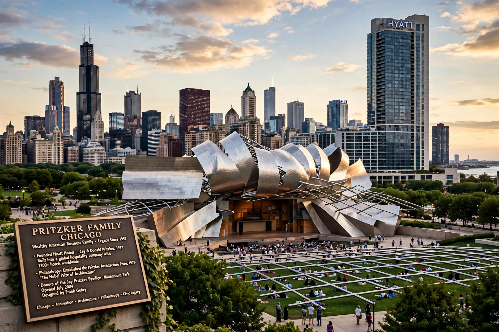

The Pritzker family is an American family of Jewish Ukrainian origin based in Chicago, among the wealthiest in the United States, known for founding the Hyatt hotel chain and the Marmon Group, and for the Pritzker Architecture Prize.

| Origin | Kyiv, Ukraine (immigrated 1881) |
|---|---|
| Base | Chicago, Illinois |
| Known for | Hyatt Hotels, philanthropy |
Nicholas Pritzker immigrated from Kyiv in 1881. His son A.N. Pritzker built a law and investment business; nephews Jay, Robert and Donald founded Hyatt (from 1957) and diversified holdings. Jay also established the Pritzker Architecture Prize (1979), often called architecture's Nobel.
Members include Penny Pritzker, US Secretary of Commerce (2013–17); J. B. Pritzker, Governor of Illinois from 2019; Thomas Pritzker; and philanthropist Jennifer Pritzker. The family's fortune was divided among heirs in a settlement in the 2000s. Namesakes include the Pritzker School of Medicine and Millennium Park's Jay Pritzker Pavilion.